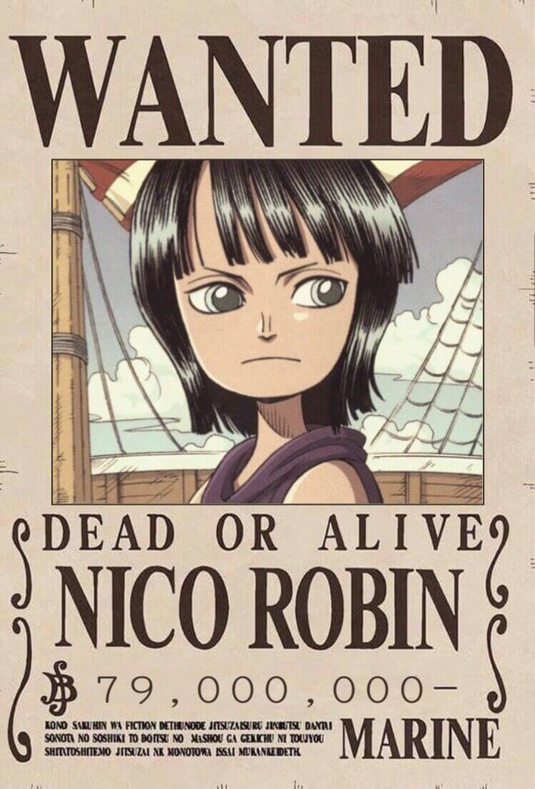
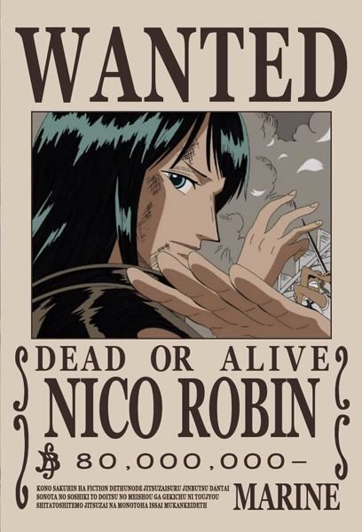
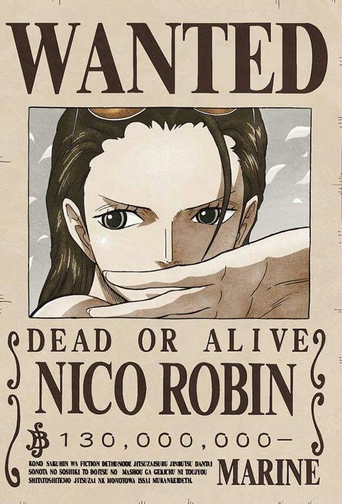
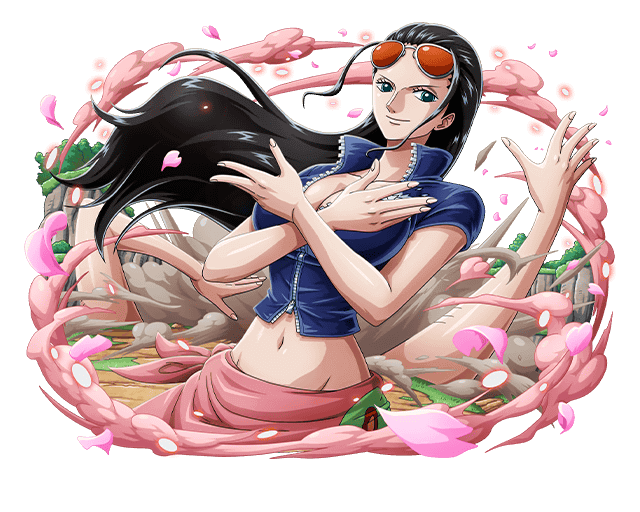

robin
Nico Robin, también conocida por sus epítetos: Niña Demonio y La Luz de la Revolución es la arqueóloga de los Piratas de Sombrero de Paja. Es el séptimo miembro de la tripulación y el sexto en unirse
Es usuaria de la fruta del diablo Hana-Hana de tipo paramecia que le brinda la capacidad de "florecer" cualquier parte de su cuerpo en cualquier superficie, tanto inerte como viviente;
Su sueño es conocer la verdadera historia investigando en los poneglyphs.
Es la única superviviente del Clan de Ohara, sucediendo a todos sus predecesores como arqueóloga, y fue la mano derecha del jefe de la organización criminal Baroque Works.
